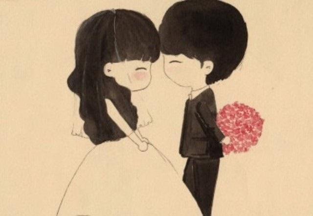

你很丑啊,可是我喜欢
你每天都照镜子都觉得自己不够好看.我每天都要说你长得真丑。
可是啊，你知道吗 ？ 其实你刚好丑成了我喜欢的样子。
高中时身边有一对情侣特别受到大家瞩目。因为男生是特别帅气迷人的样子，而小姑娘却普通而朴素。
我第一次见到这个男生的时候，直接是被他帅醒的。他不说话，说话，笑起来，不笑起来的样子，都是帅的。
我和同学打赌说这一个学期之内就会分手，而另一个同学说2个月内，因为隔壁班的班花一直在追求他.
然而 两个月过去了，一个学期过去了，高中时代过去了。
毕业没有分手，工作异地没有分手。而且一直到现在，他们就要结婚了。
再后来我问哥们，哥们说，姑娘对他各种好，而且他喜欢她周到细致的心思，可以照顾到身边所有人的感受。一个懂得为别人着想的人，是善良的人。
或者喜欢一个人，并不是因为她有多好看。
你不是倾国倾城，但是却刚刚好能填满我的眼睛。
所以，我喜欢你美的样子：
你不是最漂亮的，但是你为梦想奋斗的时候格外美丽。
你不是最能干的，但是总是孜孜不倦的去坐着那些零碎的事情,没有怨言和愁苦，因为你知道这是人生的必修课。
你不是最瞩目的，但是却因为身上的某种品质而闪闪发光的样子。
喜欢你那思考时闪闪发亮的眨眼睛,犹如清澈蓝天无尽的缠绵。
喜欢你那倾诉时喃喃凝咽的抿嘴唇,仿佛轻叩旧墙触动我的心腺。
我是连，帅气依旧。（说不帅的请不要昧着良心说话 "." ）
晚安世界,也祝你晚安！
做最好的自己，没事，你刚好丑成我喜欢的样子。